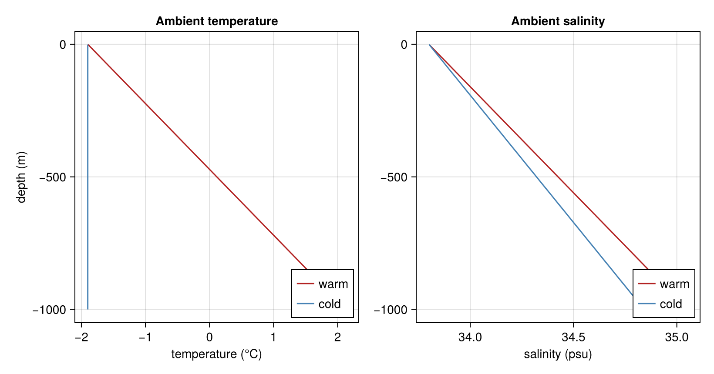

ISOMIP+ ambient forcing
The cavity is driven by a prescribed background ocean profile: temperature and salinity as functions of depth. LADDIE samples this profile at the depth of the layer base (z_b − D) to obtain the ambient Tₐ, Sₐ used by the entrainment and density closures.
The ISOMIP+ protocol (Asay-Davis et al. 2016) defines two end-members — a warm and a cold cavity — both linear in depth down to z₁ = −720 m. We now build a model for each condition (the profiles are stored as m.Tz, m.Sz on the 1-m depth grid m.z).
using Laddie
using CairoMakie
CairoMakie.activate!(type = "png")
mw = build_isomip(; isomipcond = :warm)
mc = build_isomip(; isomipcond = :cold);We now plot the two profiles over the upper 1000 m (the cavity depth range). Warmer, saltier water at depth is the energy source for melting; the warm profile reaches ~+1 °C near 720 m.
sel = mw.z .>= -1000
fig = Figure(size = (820, 430))
ax1 = Axis(fig[1, 1], xlabel = "temperature (°C)", ylabel = "depth (m)", title = "Ambient temperature")
lines!(ax1, mw.Tz[sel], mw.z[sel], color = :firebrick, label = "warm")
lines!(ax1, mc.Tz[sel], mc.z[sel], color = :steelblue, label = "cold")
axislegend(ax1; position = :rb)
ax2 = Axis(fig[1, 2], xlabel = "salinity (psu)", title = "Ambient salinity")
lines!(ax2, mw.Sz[sel], mw.z[sel], color = :firebrick, label = "warm")
lines!(ax2, mc.Sz[sel], mc.z[sel], color = :steelblue, label = "cold")
axislegend(ax2; position = :rb)
fig
This page was generated using Literate.jl.